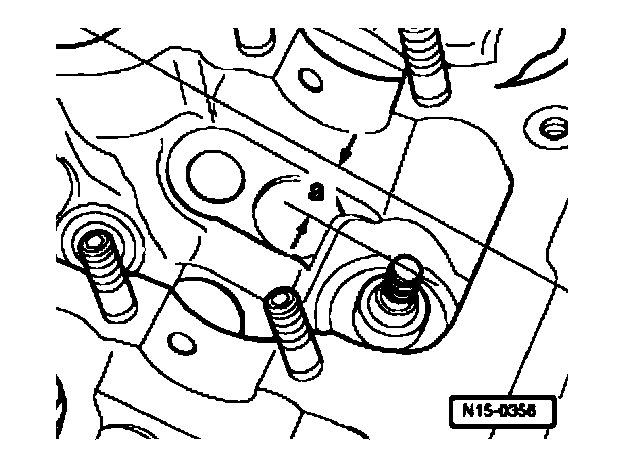
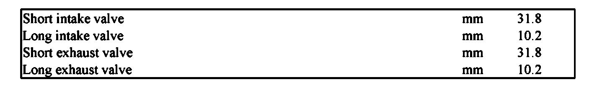
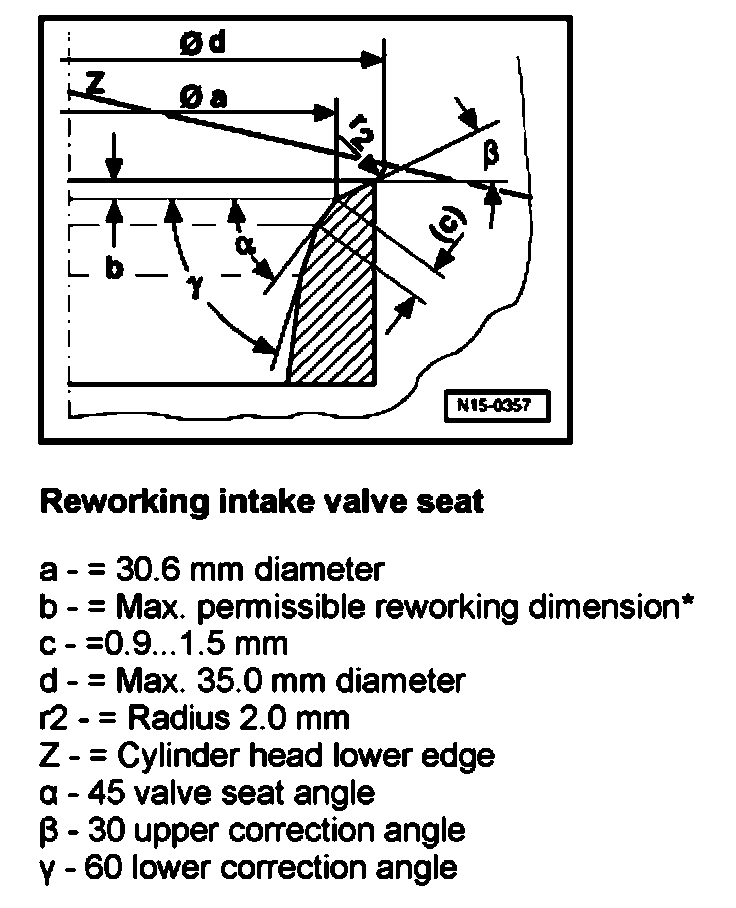
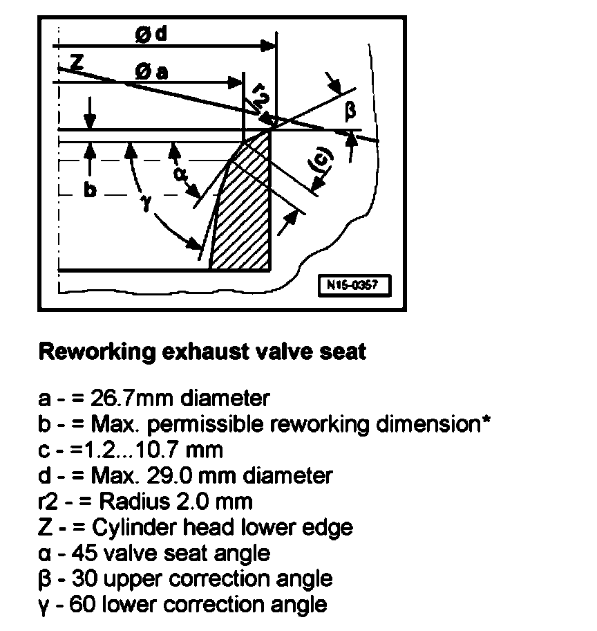

Valve Seat: Testing and Inspection
Valve seats, reworking
Special tools, testers and auxiliary items required
^ Depth gauge
^ Valve seat refacing tool
Work procedure
Note:
^ When repairing engines with leaking valves, it is not sufficient to rework or replace valve seats and valves. It is also necessary to check the valve guides for wear. This is particularly important on high mileage engines.
^ The valve seats should only be reworked just enough to produce a perfect seating pattern. The maximum permissible reworking dimension must be calculated before work is carried out. If the reworking dimension is exceeded, the function of the hydraulic lifters can no longer be guaranteed and therefore the cylinder head should be replaced.
- Remove camshafts.
Calculating the maximum permissible reworking dimension
- Insert valve and press firmly against seat.
Note:
^ If the valve is to be replaced as part of a repair, use a new valve for the calculation.

- Measure distance - a - between end of valve stem and upper edge of cylinder head.
- Calculate maximum permissible reworking dimension from measured distance - a - and minimum dimension.

Minimum dimensions:
Measured distance - a - minus minimum dimension = maximum permissible reworking dimension.
Example:
Measured distance 10.6 mm
Minimum dimension 10.2 mm
=Maximum permissible reworking dimension 1)
1) The maximum permissible reworking dimension is shown on illustrations for reworking valve seats as dimension -b-.

Reworking intake valve seat
a - = 30.6 mm diameter
b - = Maximum permissible reworking dimension*
c - =0.9 - 1.5 mm
d - Maximum 35.0 mm diameter
r2 - Radius 2.0 mm
Z - Cylinder head lower edge
a - 45 valve seat angle
P - 30 upper correction angle
y - 60 lower correction angle

Reworking exhaust valve seat
a - = 26.7mm diameter
b - = Maximum permissible reworking dimension*
c - =1.2 - 10.7 mm
d - Maximum 29.0 mm diameter
r2 - Radius 2.0 mm
Z - Cylinder head lower edge
a - 45 valve seat angle
P - 30 upper correction angle
y - 60 lower correction angle